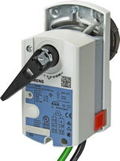
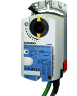
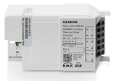
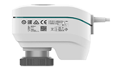

HVAC 执行器产品说明
Rotary actuator for 6-way ball valves
 | GDB111.9E/KN, 用于六通球阀的网络旋转执行器
订单号：S55499-D203 下载数据表：A6V10725318 |
GLB111.9E/KN, 用于六通球阀的网络旋转执行器
订单号：S55499-D207 下载数据表：A6V10725318 |
Damper actuators
 | GDB111.1E/KN，风门执行器 5 Nm，非弹簧复位，AC 24 V，150s
订单号：S55499-D190 下载数据表：A6V11566316 |
GLB111.1E/KN，风门执行器 10 Nm，非弹簧复位，AC 24 V，150s
订单号：S55499-D198 下载数据表：A6V11566316 |
VAV compact controller
VAV 紧凑型控制器是 KNX 设备，配有压差传感器（工作范围 0..300 Pa）、风门执行器和风量控制回路。它们可用于气流可变或恒定的工厂。风门的角度旋转可在 0° 至 90° 之间机械调节。
GDB181.1E/KN, VAV 紧凑型控制器
订单号：S55499-D134 下载数据表：CE1N3544 |
GLB181.1E/KN, VAV 紧凑型控制器
订单号：S55499-D135 下载数据表：CE1N3544 |
Thermal drive actuator
| N605D41, 热驱动执行器
Order number: 5WG1605-1DB41 下载数据表：5WG1 605-1DB41 |

 | RL 605D23, 热驱动执行器
Order number: 5WG1605-4DB23 下载数据表：5WG1605-4DB23 |
KNX S-Mode networked actuator
 | SSA118.09HKN, 联网阀门执行器
订单号：S55180-A111 下载数据表：A6V11858280 |
Additional information
基本文档 | GDB111.1 / GLB111.1:CE1Z4634 |